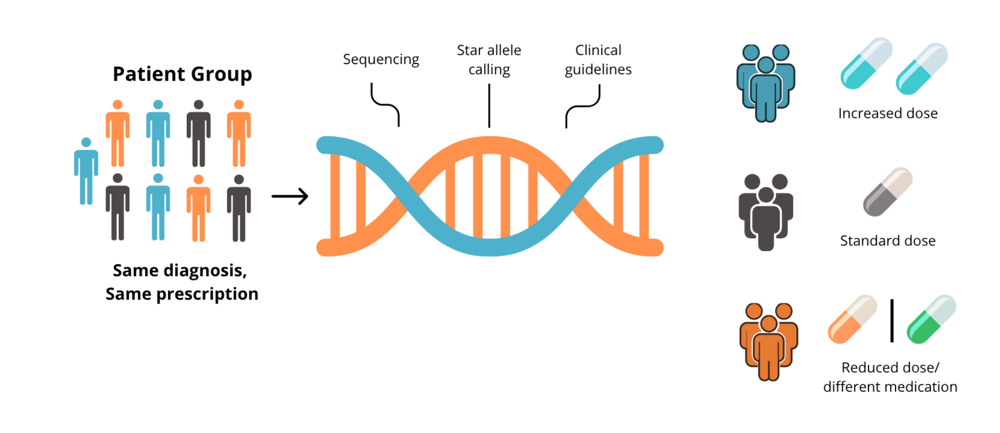
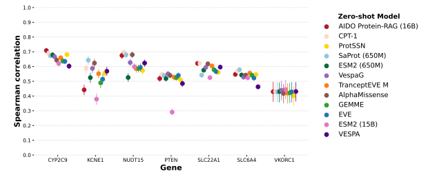
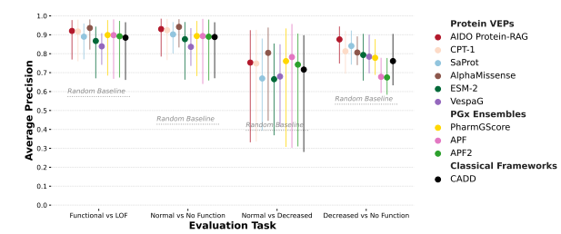
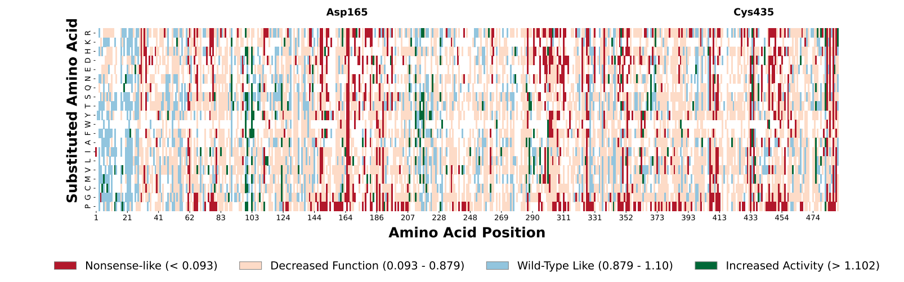
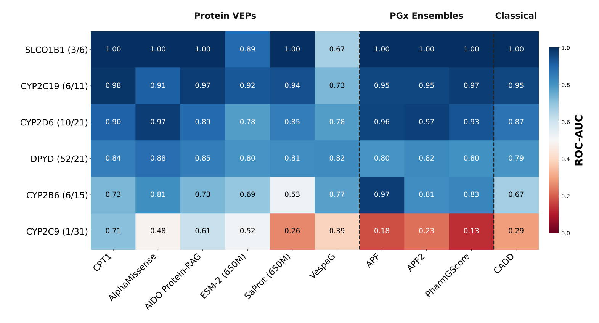
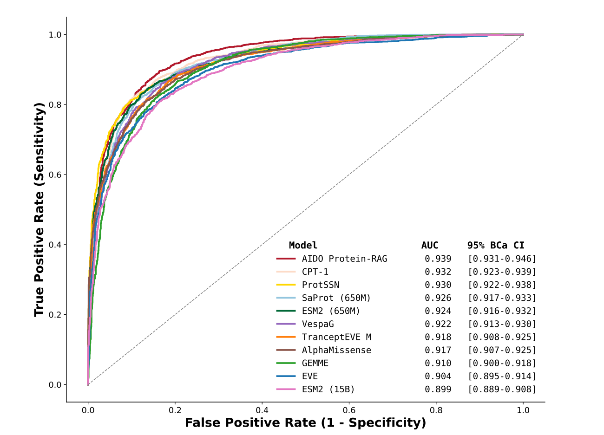

Technologies
Python PyTorch pandas NumPy Git GitHub Linux Jupyter Notebook VSC HPC Statistics matplotlib SLURM R
Repository
Location
Jessa Hospital in Hasselt.
Summary
Pharmacogenomics (PGx) aims to understand how genetic variation influences drug response.

Ideally, each individual receives a drug tailored to its genetic profile. However, a major challenge is the interpretation of rare and novel variants, many of which lack experimental or clinical annotations.
Current approaches rely on models specifically trained for PGx tasks. This thesis investigated an emerging and under-explored direction: whether general protein language models, without PGx-specific training, can predict pharmacogenomic variant effects through zero-shot inference.
To my knowledge, this represents the first systematic evaluations of large-scale protein language models for PGx variant effect prediction across both experimental and clinical benchmarks.
Research question
Can modern protein language models predict pharmacogenomic variant effects in a zero-shot setting without pharmacogenomic-specific training?
My contribution
I independently developed and executed this research project from initial idea to final report.
Key contributions:
- Conducted an extensive literature review and identified an under-explored research direction.
- Defined the research question and designed a benchmark study to evaluate zero-shot protein language models in PGx.
- Curated and processed open-source datasets.
- Developed reproducible data pipelines and statistical evaluation frameworks.
- Performed large-scale model inference on HPC infrastructure.
- Translated computational results into biological insights and research conclusions.
The project required independent decision-making, critical evaluation of existing assumptions, and collaboration with academic and clinical supervisors.
Methods and Materials
Methods:
- BCa bootstrap confidence intervals
- Permutation based hypothesis testing
- Multiplicity correction
- Bootstrapped AUROC and PR metrics
Materials:
- Open-source high-throughput experiments (DMS assays) -> continuous
- Open-source clinical annotations relevant to PGx -> categorical
Main findings
1. High Performance on Continuous Enzymatic Activity Assays

Top zero-shot models capture strong functional signals in key metabolizing enzymes, achieving peak Spearman correlations between \(\rho = 0.58\) and \(0.72\) on CYP2C9 and NUDT15.
2. Zero-shot PLMs Match Domain-Specific Ensembles on Clinical Tasks

In clinical star-allele benchmarks, zero-shot models (CPT-1, AlphaMissense, AIDO.Protein-RAG) achieved macro AUROCs up to 0.86, matching specialized PGx frameworks like APF2 and PharmGScore across multiple functional tasks.
Conclusion
- Zero-shot protein models achieve moderate to strong correlations with continuous enzymatic activity.
- Several protein models match or outperform specialized PGx prediction frameworks on clinical variant classification tasks.
Engineering & Infrastructure
- HPC Scale: Executed zero-shot inference for 12 large protein models (including 16B parameter models like AIDO.Protein-RAG) on NVIDIA H100 GPUs using the Flemish Supercomputer (VSC).
- Workflow Automation: Created reproducible data pipelines using Bash, Python, Jupyter Notebooks, Conda, and SLURM scripts.
Gallery
| Figure | Description |
|---|---|
 |
Positional functional landscape of CYP2C9. Each cell shows the experimentally measured effect of amino acid substitutions, and missing data are shown in gray. Colors represent functional classes derived from the DMS assay thresholds. |
 |
The heatmap displays AUROC values for each gene-model pair. Labels on the left track the variant distribution (normal and increased vs. decreased and no function) for each gene. |
 |
ROC curves for classifying extreme CYP2C9 enzyme activity phenotypes using DMS activity thresholds (< 0.2 vs. > 0.8). Top performing models achieve approximately 0.94 AUC. |